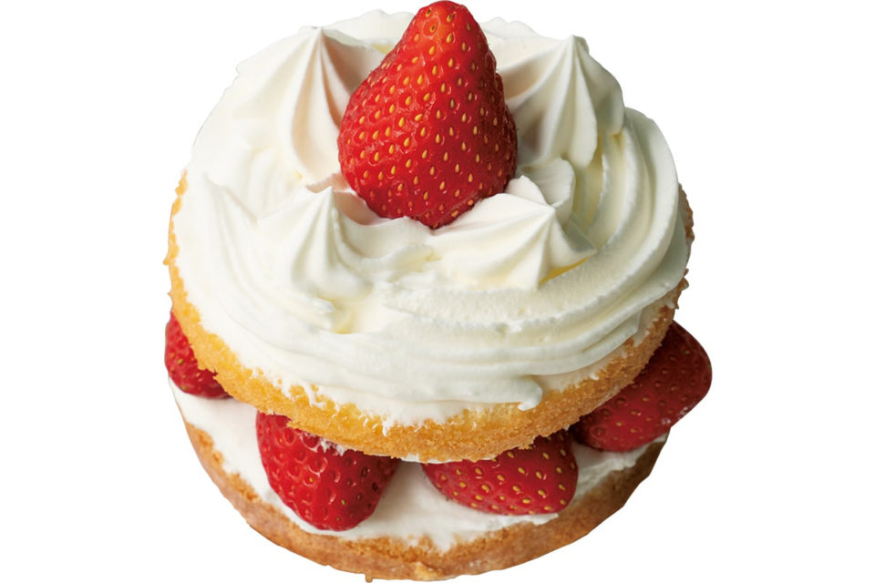
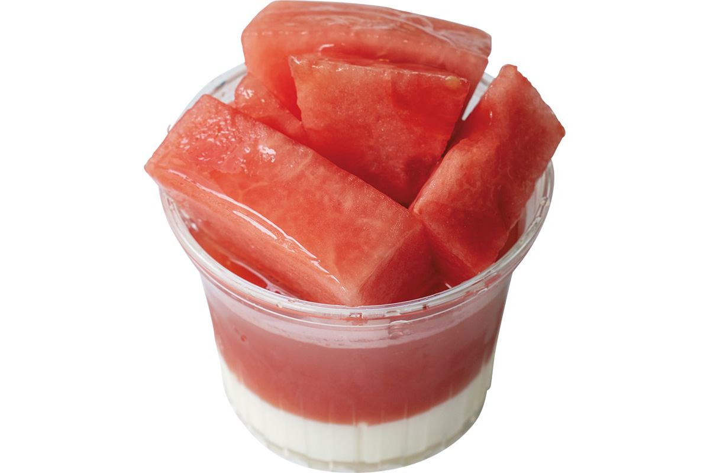
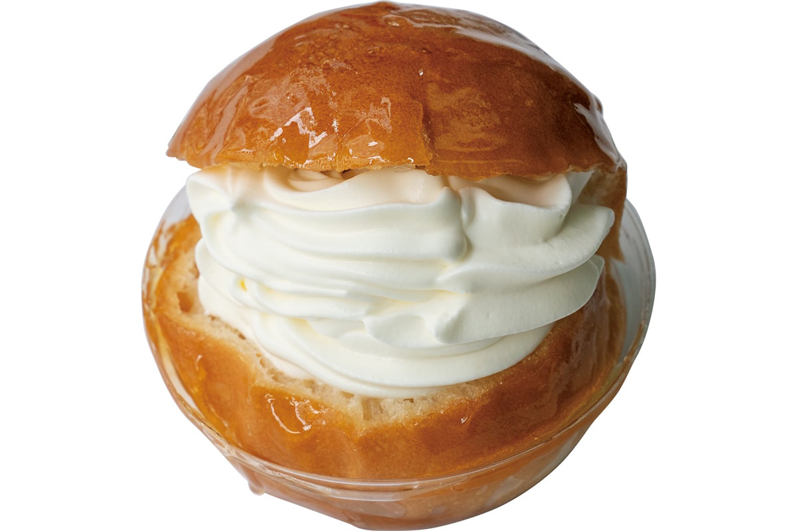
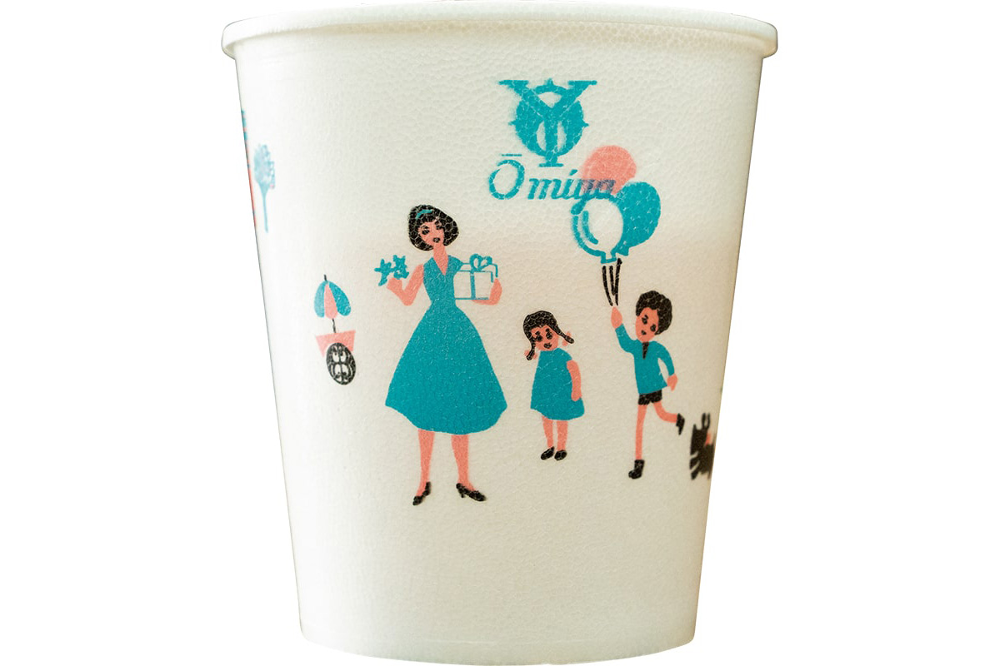

Токио · Канда · кондитерская
Ohmiya Yougashiten в Канде: кондитерская, которая меняется уже больше 130 лет

В токийском квартале Канда больше 130 лет работает кондитерская и пекарня Ohmiya Yougashiten. Её упаковку и пирожные многие считают образцом старины, но сама лавка всё это время спокойно менялась.
Традиция
Старое, которое живёт сегодня
Директор одного токийского магазина-галереи, большой любитель хороших вещей и хороших лавок, по работе часто видит так называемые традиционные ремёсла. Само то, что в разных краях Японии долго передаются обычаи и навыки, по его мнению, прекрасно. Огорчает другое: нередко громче всего звучит слово «традиция», а сами вещи оказываются далеки от повседневной жизни. Будут ли люди покупать то, что существует во имя традиции, но почти не считается с тем, как живут сегодня?
Ohmiya Yougashiten в Канде показывает, как может быть иначе. Длинный зал с высокими потолками, солидный и при этом современный, похож на холл гостиницы. В витринах аккуратно лежат свежие пирожные, в которых главное вкус самих продуктов, например торты со сливками и желе из фруктов по сезону, а рядом печёные сладости. В хлебном отделе выстроены в ряд простые хлеба, от белого хлеба для тостов до хлеба с начинкой и сладких булочек. Это ровно тот хлеб, который давно хотелось съесть, и стоит он недорого.

Лавка
С 1884 года в Канде
Кондитерскую и пекарню Ohmiya Yougashiten знают не только в округе, но и по всей стране, среди любителей сладкого. Её история начинается в 1884 году, когда основатель открыл пекарню. На первом этаже магазин, на втором и третьем цеха, и всё, что продаётся в лавке, делают в этом же здании.
Глава компании, представитель четвёртого поколения семьи, каждое утро сам ездит на оптовый рынок Ота и выбирает фрукты по сезону. Девиз лавки «недорого, но не дёшево» держится именно на такой ежедневной работе.

Ретро-упаковка и классические пирожные создают впечатление, что здесь десятилетиями берегут старые рецепты и порядки.
«Так часто думают, но на самом деле мы всё время что-то меняли под время и под сезон»
глава компании
Перемены
Смелость меняться
Когда меняются вкусы людей и то, какого обслуживания они ждут, здесь пересматривают и рецепты, и сам порядок работы. То же с оборудованием: хорошие машины для производства сладостей в лавке охотно ставят. Принято считать, что ручная работа всегда лучше, но у машин свои достоинства, и дело не только в скорости: ровное качество и чистота. Раз машина хороша, ею стоит пользоваться. В этом и есть гибкость лавки.
В глубине просторного зала было кафе с самообслуживанием. Гость выбирал хлеб или пирожное с витрины и брал к ним напитки: кофе, чай, свежевыжатые соки из фруктов по сезону и даже суп. В 2026 году, по сообщению на официальном сайте, кафе не работает, а магазин открыт.

Лавка чутко следит за тем, как меняется время и чего ждут люди, и не боится меняться сама. Похоже, именно эта постоянная изобретательность и объясняет, почему лавку любят больше 130 лет.
Ohmiya Yougashiten
- Адрес
- Токио, Тиёда, Канда-Авадзитё, 2-4
- Телефон
- +81 3-3251-1088
- Часы работы
- 9:00–19:00, воскресенье и праздники 10:00–17:30
- Выходные
- нет
Фото: Ацуси Ямахира.